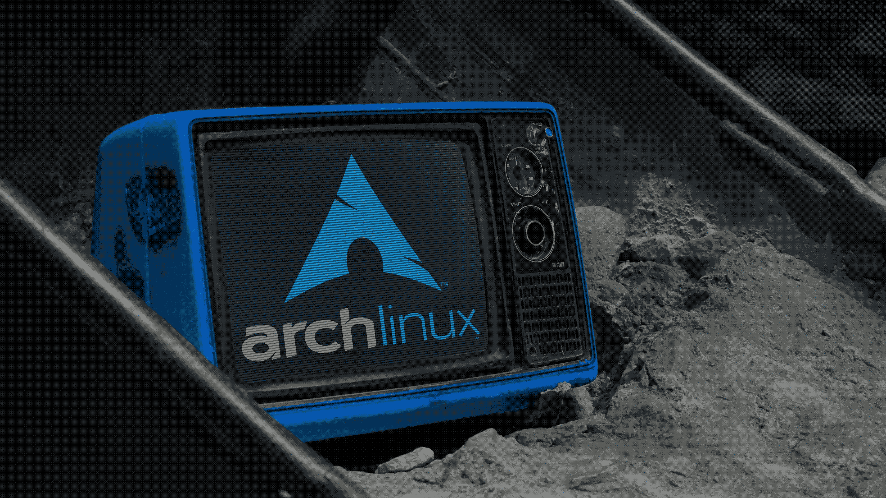
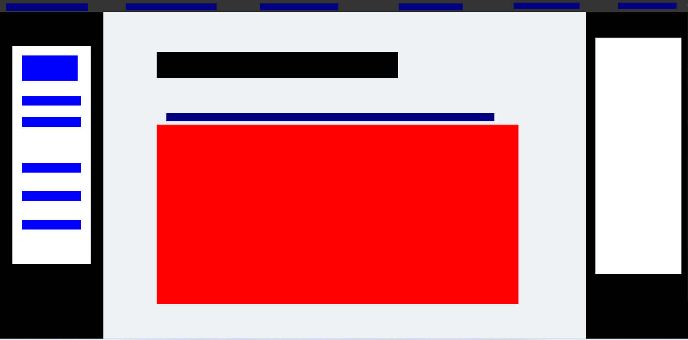

網站主題: Arch Linux 推薦

計劃書:
網站目標和動機
沒有打算放太正經的內容 內容純粹寫好玩
代碼也是當練習
剛接觸Linux 但是覺得十分有趣 這次剛好當期末網站留念
由於Arch的trademark允許非商用性質的評論及宣傳等
論壇上也有很多桌布標註CC0 不用擔心找不到可以用的資源
內容簡介、項目連結
首頁
最主要放上面那張GIF圖給人個印象和介紹網站
因為怕修改次數太多 首頁和預定放雜物那頁偏隨意
沒有明確的計畫
- 主要呈現Arch有多好多讚
- 網站是用血淚和肝寫成的之類
- 其他一些常見的胡扯瞎扯
Linux簡介
簡單介紹Linux和GNU等相關項目
可能會放Linus Torvalds的影片
Linux distro
簡介各發行版及package manager
常見Linux和其他種類(例如: Google的Android或微軟WSL)
提到一下Arch Linux 然後去下一頁"Arch is the best"
Arch is best
介紹Arch Linux
ArchWiki和社群的強大
BTW I use Arch
為何會使用Arch
平板能進安裝的只有Ubuntu和Arch
進系統的只有Manjaro
開始在虛擬器和筆電使用Arch
archinstall當時已安裝程式
AUR
開始學一些bash腳本
之後該學習...
其他FOSS
介紹一些想要分享的開源軟體
管它有沒有用 反正我用過覺得好用就對了
Inkscape、OBS、Firefox等
GCC、OpenJDK或.NET學習可能會用到的工具
一些沒用過但公認很威很屌而且未來想學的其他開源軟體(如Blender或O3DE)
其他Arch相關或沒用的雜物
有空想做跟網站無關的東西
沒空就讓它消失
外部連結
間接用到的參考資料或推薦的網站
網站結構
要拿這頁去改 畫圖有空再說 先commit 
-
頂端
- 文字(?)
- 動畫或其他可能會讓它比較好看的東西
- 如果可以希望它具一點互動性
-
左側為站內主題
- Home(計劃書的Home應該會繼續留在頂端)
- 關於 Linux
- Linux 發行版
- Arch is the best: 介紹 Arch Linux
- BTW I use Arch
- 雜項類
- 外部連結
-
右側為網站內容變化
- 文字或顏色變化
- 換背景圖也在考慮範圍內
-
文本
- 放置中間向左對齊
- 有圖片就寫簡單的說明(藍色部分)
影片則使用超連結或於下方顯示(紅色為圖片或影片)
進度時間表
每天至少寫30分鐘或達成進度到能commit兩次
有拖欠就隔天補
.
.
.
其他的再說
進度最明確就這樣
這週花的平均時間是目標兩倍以上 所以我覺得可行
這段沒分數沒差我去趕其他作業了 :D